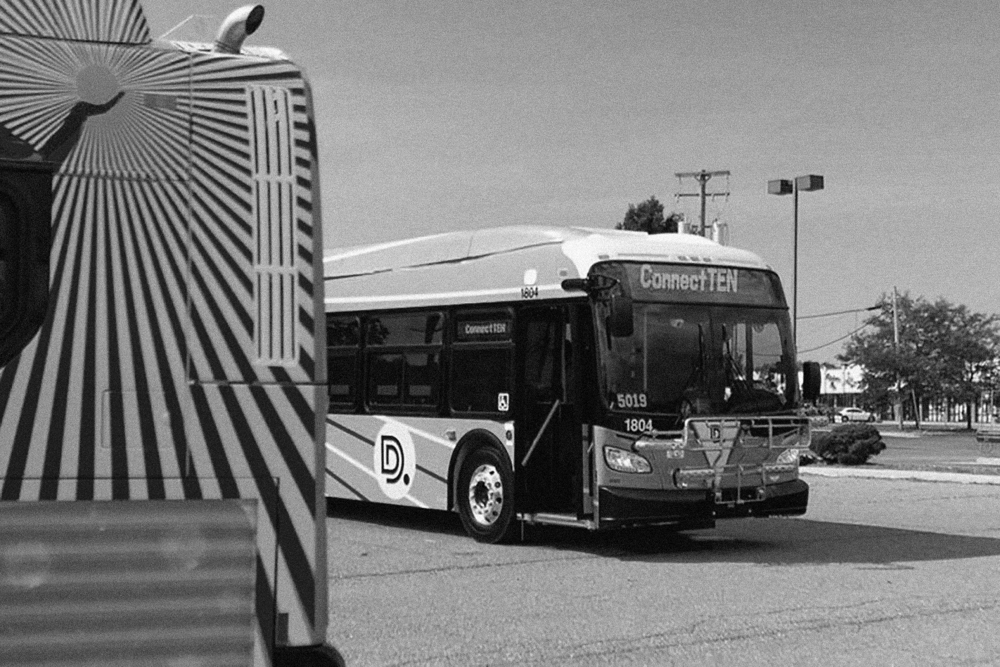
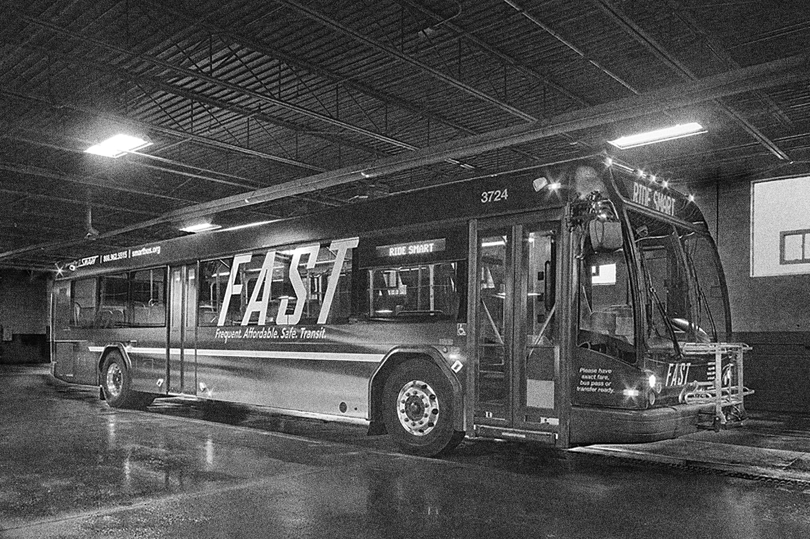
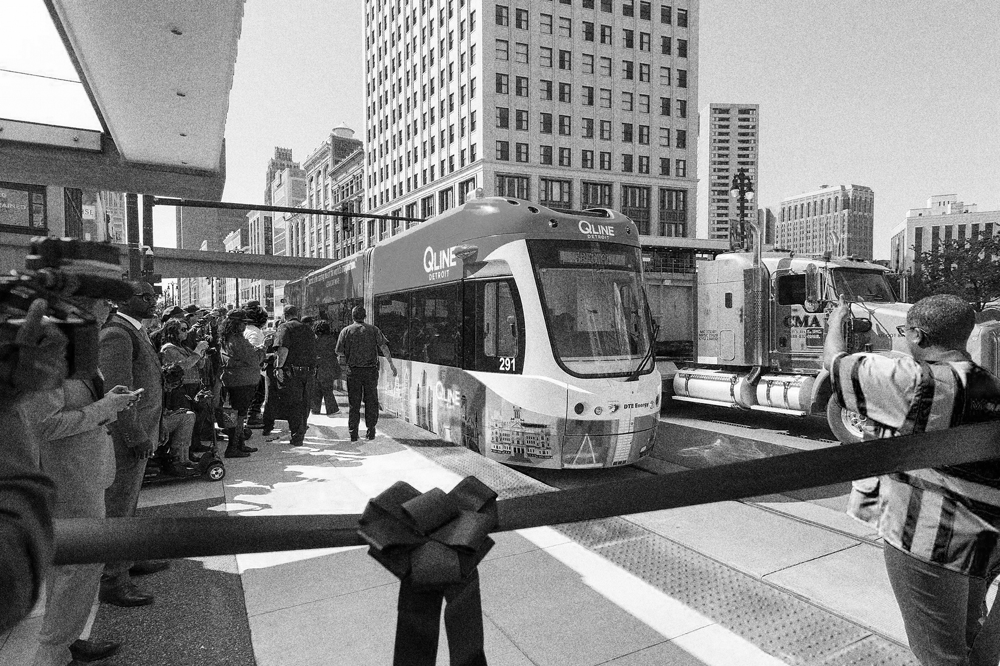
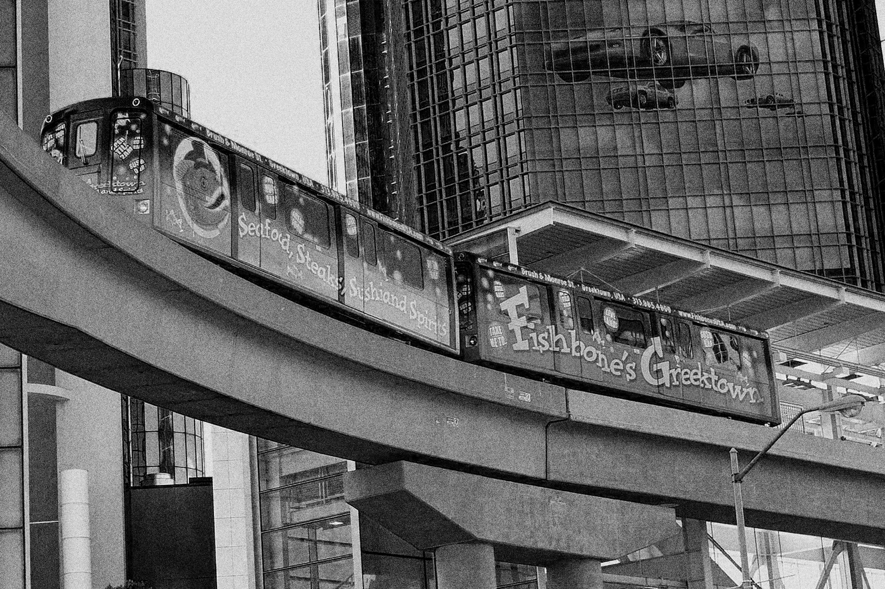

Today, Detroiters can travel via DDOT buses, SMART buses (which aren’t owned by the city), the M-1 rail on Woodward Ave, and if absolutely necessary, the People Mover. Additionally, residents can walk, bike, and if they have a car: drive.

- DDOT (Detroit Department of Transportation) has been in existence since 1922. All routes meet at the hub, the Rosa Parks Transit Center. Previously the DSR.

- SMART (Suburban Mobility Authority for Regional Transportation) is a privately owned transit provider for suburban Metro Detroit. Previously SEMTA.

- The QLine is a 6.6-mile streetcar loop that travels Woodward Avenue, traveling from Downtown Detroit, through Midtown, New Center, and the North End. The line is owned privately by M1 RAIL and was named by Quicken Loans, who purchased naming rights and announced the name in March 2016.

- The PeopleMover is a 2.9-mile light rail automated people mover system that operates on a single track encircling the business district of Detroit. It is a result of a failed attempt at a greater transport system.